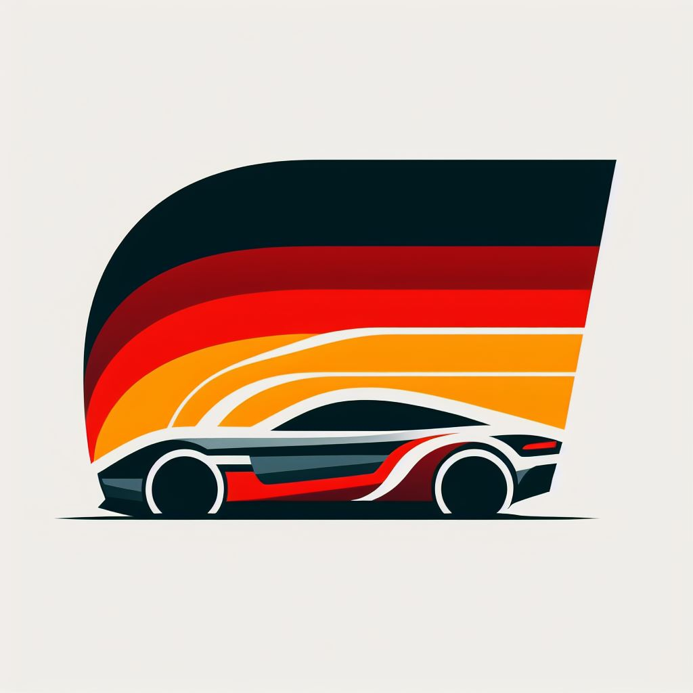
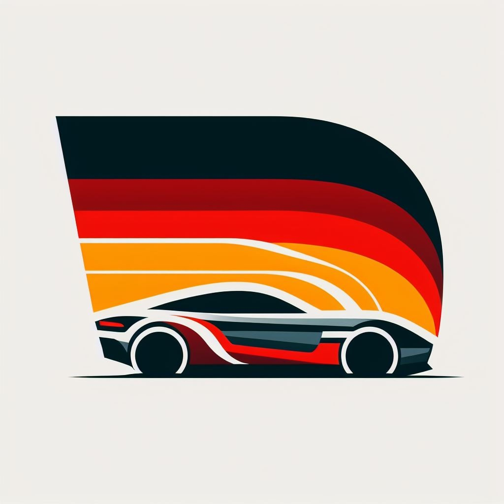
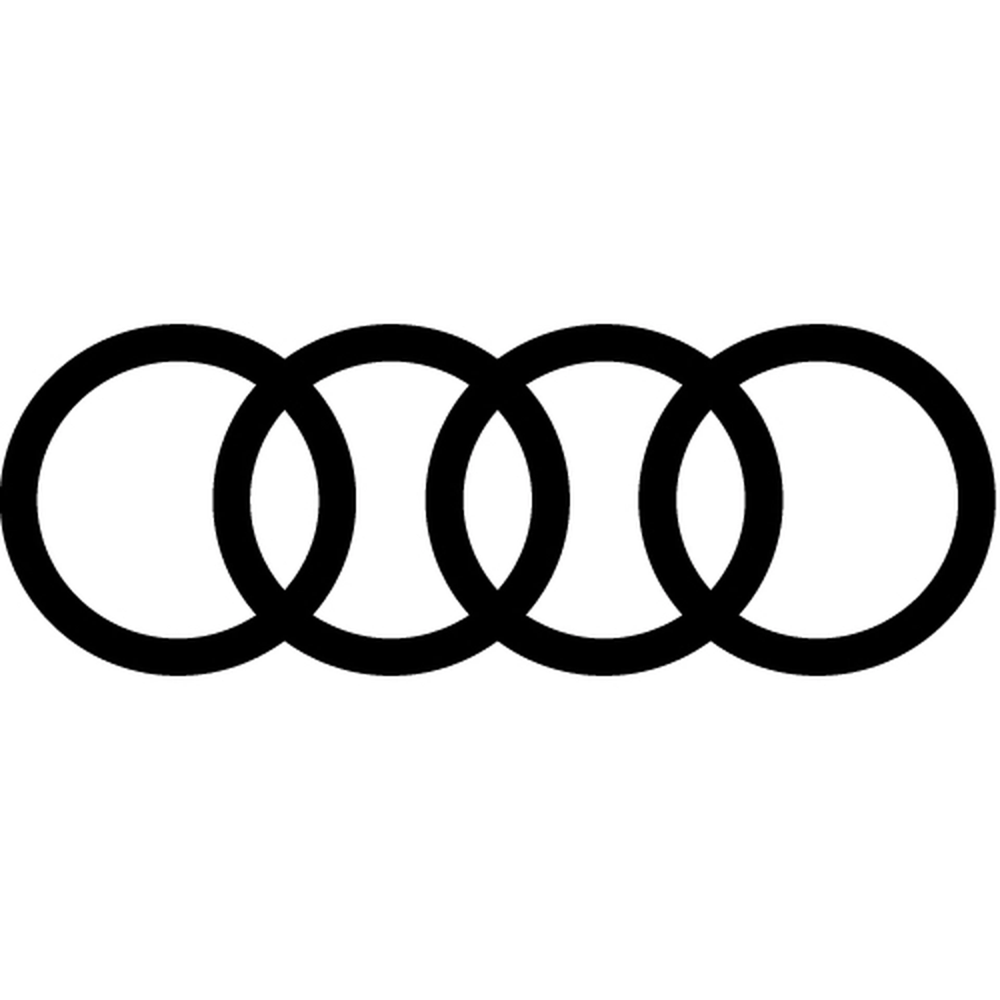
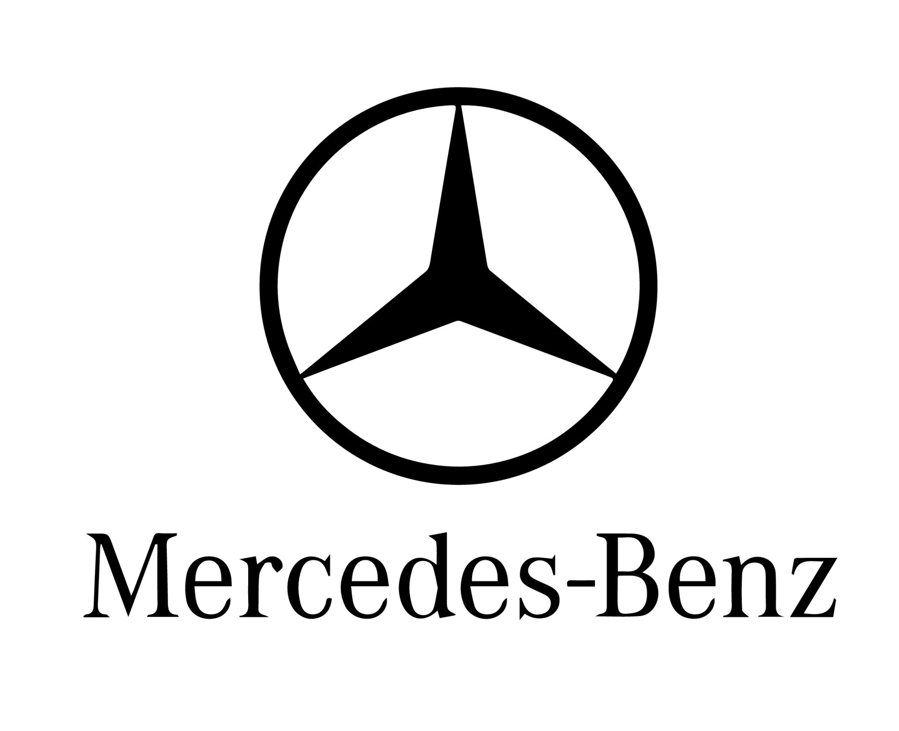
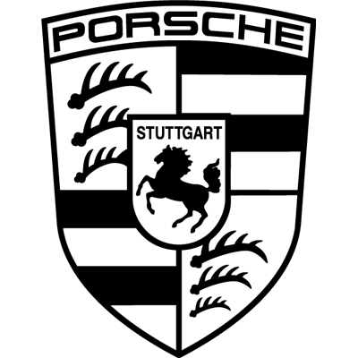

Industria Automovilistica Alemana
 -----------
----------- -------
------- -------
------- -------
-------
|  | Industria Automovilistica Alemana |  | ||||
|---|---|---|---|---|---|---|
| AUDI--------- | BMW--------- | MERCEDES--------- | PORSCHE--------- | VOLKSWAGEN | ||
| ----------- | ------- | ------- | ------- | |
||
| AUDI | Audi es una prestigiosa marca de automóviles alemana conocida por su excelencia en ingeniería, diseño y tecnología. Fundada en 1909, Audi ha sido pionera en innovaciones como el sistema de tracción integral "quattro", estableciendo nuevos estándares en el rendimiento y la seguridad automotriz. La marca ofrece una amplia gama de vehículos, desde elegantes sedanes hasta SUVs de alto rendimiento y vehículos eléctricos de vanguardia. Audi se destaca por su calidad de construcción, atención al detalle y motores potentes, brindando a los conductores una experiencia de conducción inigualable. Además, Audi ha incursionado en el desarrollo de tecnologías avanzadas, como sistemas de asistencia al conductor y vehículos autónomos, consolidando su posición como líder en el futuro de la movilidad. Con una presencia global sólida y un compromiso continuo con la innovación, Audi continúa siendo una fuerza motriz en la industria automotriz mundial. |
|---|---|
|  | |
| Ver Modelos |
BMW es una reconocida empresa alemana fabricante de automóviles y motocicletas, fundada en 1916. Es conocida por su enfoque en la calidad, el lujo y el rendimiento en la industria automotriz. BMW se especializa en la producción de vehículos premium, desde elegantes sedanes y SUVs hasta deportivos y vehículos eléctricos de alta gama. La marca ha sido líder en innovaciones tecnológicas y de diseño, destacándose por sus motores potentes y eficientes. Además de los automóviles, BMW también produce motocicletas de alta calidad que han ganado reconocimiento mundial por su rendimiento y diseño. La empresa ha establecido una reputación sólida en el mercado global debido a su dedicación a la excelencia, convirtiéndose en una opción preferida para los entusiastas del automóvil de todo el mundo. | BMW |
|---|---|
 | |
| Ver Modelos |
| MERCEDES | Mercedes-Benz es una prestigiosa marca alemana de automóviles de lujo y vehículos comerciales. Fundada en 1926, Mercedes-Benz es reconocida por su elegancia, innovación y calidad en la industria automotriz. La empresa fabrica una amplia variedad de vehículos, desde sedanes y SUVs hasta deportivos y vehículos eléctricos, ofreciendo opciones para diferentes gustos y necesidades. Mercedes-Benz se destaca por su ingeniería de precisión, tecnología avanzada y atención al detalle en el diseño y fabricación de automóviles. Además de sus vehículos de pasajeros, Mercedes produce vehículos comerciales y camiones que son líderes en rendimiento y confiabilidad. La marca ha establecido un estándar de excelencia en el mercado de automóviles de lujo, siendo símbolo de estatus y elegancia en todo el mundo. |
|---|---|
|  | |
| Ver Modelos |
Porsche es una marca de automóviles de lujo y deportivos originaria de Alemania, fundada en 1931 por Ferdinand Porsche. La empresa se ha destacado por producir automóviles deportivos de alta gama, con un enfoque en el rendimiento, la innovación y el diseño elegante. Porsche es conocida por sus icónicos modelos, como el Porsche 911, que se ha convertido en un símbolo de excelencia en la industria automotriz. La marca también ha incursionado en la fabricación de SUVs de lujo, ampliando su gama de productos para satisfacer diversas necesidades de los clientes. Además de los automóviles, Porsche ha tenido éxito en competiciones automovilísticas a nivel mundial, demostrando su pasión por la velocidad y la ingeniería avanzada. Con su legado de excelencia y pasión por la innovación, Porsche continúa siendo una referencia en el mundo de los automóviles deportivos de alto rendimiento. | PORSCHE |
|---|---|
|  | |
| Ver Modelos |
| VOLKSWAGEN | Volkswagen es una influyente empresa automotriz alemana fundada en 1937. Es una de las marcas más reconocidas y grandes del mundo, produciendo una amplia gama de vehículos, desde compactos hasta SUVs y vehículos eléctricos. Volkswagen se caracteriza por su enfoque en la accesibilidad y la calidad, ofreciendo vehículos confiables y eficientes a un amplio espectro de consumidores. La empresa ha sido pionera en la industria automotriz, produciendo algunos de los modelos más emblemáticos como el Volkswagen Beetle y el Volkswagen Golf. Además, Volkswagen ha estado a la vanguardia de la tecnología verde, invirtiendo en vehículos eléctricos y soluciones de movilidad sostenible. Con una presencia global y una rica historia, Volkswagen continúa siendo una fuerza líder en la industria automotriz, marcando el camino hacia el futuro de la movilidad. |
|---|---|
 |
|
| Ver Modelos |
| ACERCA DE NOSOTROS | INICIAR SESION/REGISTRARSE | |
|---|---|---|
| AUDI | PORSCHE | VOLKSWAGEN |
| BMW | MERCEDES | INICIO |